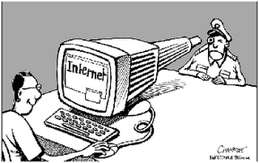

Seguridad en la comunicación de datos
Debido a que a diario existen comunicaciones e intercambio de datos entre distintos usuarios y computadoras, se necesitan medidas de seguridad en la red para asegurar que los datos que viajen durante su transmisión sean protegidos, cumpliendo los siguientes tres requisitos:
- Integridad: La alteración de los datos únicamente será realizada por quienes estén autorizados.
- Confidencialidad: La información solamente será accesible para los entes autorizados y no será expuesta ni revelada para los que no tengan la autorización.
- Disponibilidad: La información y recursos deberán estar disponibles para los entes autorizados.
Si bien el avance de la tecnología ha traído consigo grandes avances y facilidades para la humanidad, a su vez, los cibercriminales y piratas informáticos se vuelven más hábiles en sus distintas amenazas y ataques por lo que, ante nuevos ataques informáticos, distintas medidas y herramientas de seguridad informática son necesarias, mientras que algunas ya se encuentran obsoletas, otras son difíciles de atacar para los cibercriminales debido a su eficiencia, siempre con el mismo objetivo de mantener segura la red de la empresa. Algunos ejemplos de este tipo de herramientas son las redes perimetrales, enfocadas a proteger la red interna y los datos de una empresa de intrusos y amenazas; o las honeynets, redes “trampa” que sirven para simular un ambiente real y atrapar a los atacantes para controlar y registrar sus acciones.
Este tipo de herramientas son para evitar y hacer frente a los ataques a la red de transmisión de datos, los cuales se dividen en:
Ataques pasivos:
Son los que “escuchan” o monitorean las transmisiones. En este tipo de ataque se pueden encontrar:
- Divulgación de la información (snooping): Es un tipo de ataque pasivo por medio del cual el atacante se entera de la información transmitida; como por ejemplo escuchar una llamada telefónica, leer un correo electrónico abierto. Si bien no necesariamente significa que los ataques pasivos conozcan la información que fluye en una comunicación, se enfocan más en el conocimiento de ese flujo, volumen, horarios o naturaleza del mismo.
- Análisis de tráfico (conocido como packet sniffing): Consiste en rastrear y recopilar algunos o todos los paquetes que pasan a través de una red de ordenadores. Este tipo de ataque pasivo se realiza cuando el atacante puede determinar la localización e identidad de quienes se están comunicando y determinar el mensaje que está siendo transmitido aun cuando este protegido por medio de cifrado.
Ataques activos:
Son más directos y peligrosos, consistiendo en la modificación de los datos o creación de flujos de datos falsos. En este tipo de ataques se puede encontrar lo siguiente:
- Enmascaramiento (spoofing): Es la suplantación de un ente autorizado para acceder y obtener información confidencial.
- Repetición: Se realiza con la captura de unidades de datos que se vuelven a retransmitir para producir efectos no autorizados.
- Modificación de mensajes (tampering o data diddling): Incluye la modificación, o en algunos casos, la destrucción no autorizada de datos y recursos.
- Interrupción (jamming o flooding): Es la denegación de servicios a entes autorizados para obtener un fin específico, para obtener perturbaciones sobre la red desmejorando su rendimiento, o incluso inhabilitando la misma.
El siguiente video explica de manera gráfica cómo funcionan dos herramientas de seguridad de la comunicación de datos, las redes perimetrales y las honeynets: